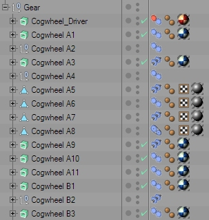
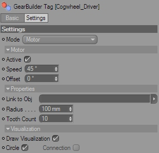
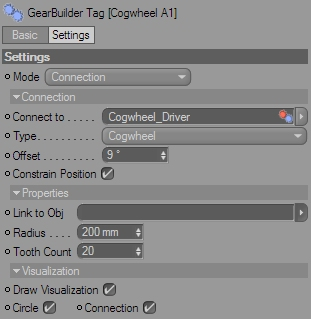

The GearBuilder Tag
The GearBuilder Tag is used to build up the complete gear. Each wheel or cogwheel gets its behaviour from a GearBuilder Tag.
The following picture shows a gear setup in the Object Manager. Note how the GearBuilder Tag always visualizes its current function with an appropriate icon.

With GearBuilder, you create the gear's behaviour by starting with an initial element (e.g. a motor) and then connect each new element (cogwheels etc) with an existing element. This way you define which element is driven by which. In the end, you will have a working gear that is completely driven by the rotation of one initial element.
Just attach the GearBuilder Tag to any kind of object. This maybe e.g. a Null Object group or an ExtrudeNURBS with a cogwheel spline.
Mode
The GearBuilder Tag offers two major modes:
- Motor
A motor will set the object into motion by rotating it around its Z axis with a certain speed. If you deactivate the motor, you can rotate the object manually.
Use this mode for the initial element of your gear, to set everything in motion. - Connection
A connection will rotate the object according to a connected object, using a certain logic.
Use this mode to build up the dependencies between your gear's elements.
Motor
This parameter group only appears if the tag's Mode has been set to "Motor".

Active
Switches the motor on or off.
Speed
Rotation speed in degrees per second (°/s).
Offset
Use this to manualle adjust the starting rotation of the object.
Connection
This parameter group only appears if the tag's Mode has been set to "Connection".

Connect to
To create a dependency to another gear element, drag that element's GearBuilder Tag into this link field.
Type
You can again choose from three connection types:
- Cogwheel
Create a cogwheel connection.
The element will rotate in the opposite direction of the connected element, and the speed will depend from both elements' radius. - Share axis
Create a shared axis connection
The element will rotate exactly like the connected element. Use this to mount two elements on the same axis. - Belt
Create a belt connection
The element will rotate in the same direction as the connected element, and the speed will depend from both elements' radius.
Offset
Use this parameter to adjust the basic rotation of the element, e.g. to make two cogwheels' teeth fit precisely into each other.
Constrain Position
This option helps editing the gear element's position.
If the Connection Type is set to "Share axis" the object can only be moved along the connected object's Z axis.
If the Connection Type is set to "Cogwheel" or "Belt", the object can only be moved along the connected object's XY plane.
Invert Rotation
By default, GearBuilder will assume that the Z axes of your gear elements all point into the same direction. However, sometime you will find that you accidently built some elements having their Z axis point into the other direction. To adapt a connection to that, check this option.
Properties
Link to Obj
If you don't want to set the element's properties manually, you can inherit them from another object. Just drag an object into this link field. Cogwheel Splines, Circle Splines and the Cylinder primitive are allowed. The GearBuilder Tag will inherit their radius (Cogwheel Spline's Inner Radius will be used), and even a Cogwheel Spline's tooth count.
When nothing is linked here, the parameters can be set manually.
Radius
This is the element's radius. It is important to set a valid radius to make cogwheel and belt connections work.
Tooth Count
The amount of teeth on a cogwheel.
Visualization
Draw Visualization
Enable or disable the visualization.
Circle
Draw a 3D circle to visualize the element's position, alignment and radius.
Motors will draw a red circle, connections a blue circle.
Connection
Visualize the connection by drawing a line between the element the the connected element, as well as a little circle to mark the element's position.
Cogwheel connections will display in yellow, belt connections in orange and shared axis connections in green.
Motors will draw now connection, since they're not connected to anything.